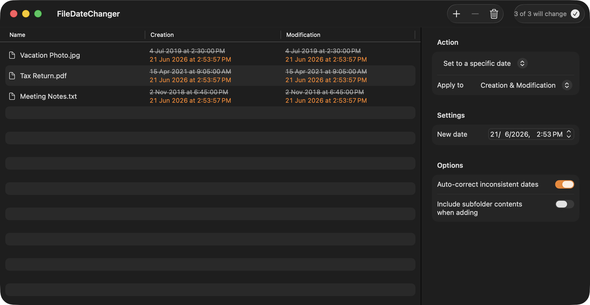
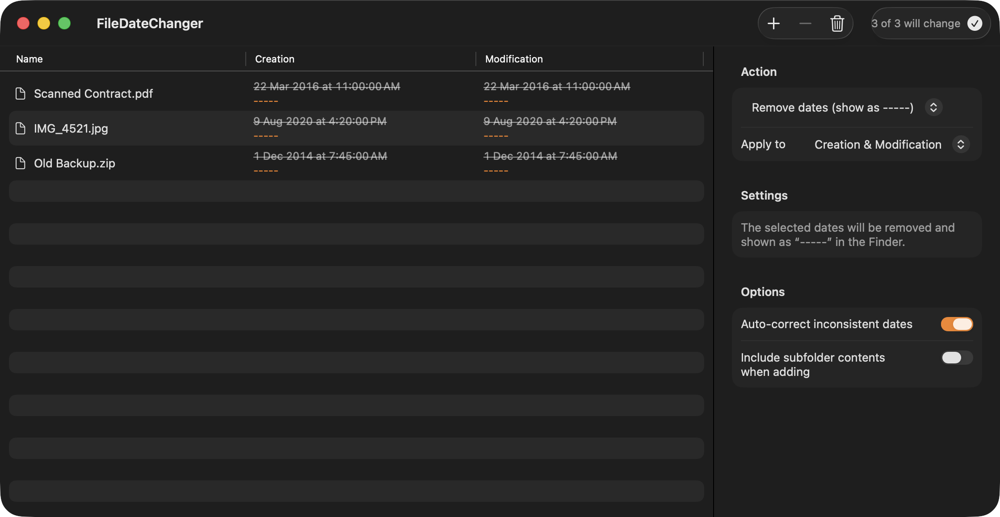

Batch-change the creation & modification dates of your files and folders — with a live preview, on native macOS.

Stamp any file or folder with an exact creation and/or modification date and time.
Add or subtract days, hours, minutes and seconds from existing dates.
Copy creation↔modification, or lift both dates from another reference file.
Clear dates entirely — the Finder then shows the item as -----.
See exactly what each file's new dates will be before you apply anything.
Drag in many files at once. Auto-corrects impossible dates; confirms before writing.
